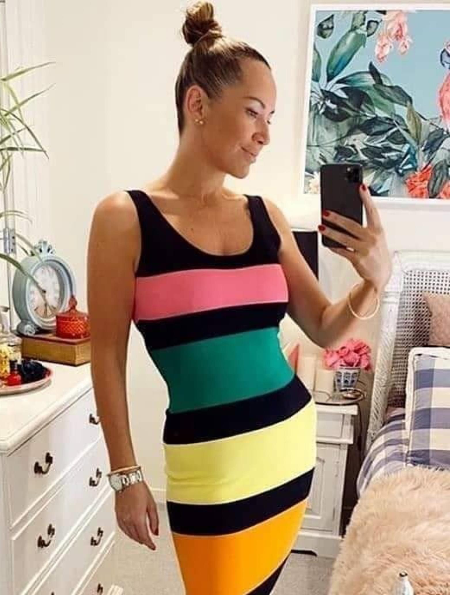

Me emociono mucho cada vez que pienso en la suerte que tuve de haber descubierto este pequeño secreto...
Digo "secreto" porque si todo el mundo supiera de este batido de frutas, tanto el fitness como la
industria estarían en bancarrota...
La realidad es que realmente no necesita hacer ejercicio durante largas horas todos los días, o comer nada
más que ensaladas...
Es tan simple que cualquiera puede obtener los resultados que obtuve...
Me sorprendo cuando me miro en el espejo. Sigo recibiendo elogios de extraños al azar e incluso aquellos a
los que no he conocido en mucho tiempo tienen que verificar dos veces cada vez que me ven...
Hoy me siento segura de mi propia piel y cuerpo. Me gusta comprar ropa y vestirme bien para eventos de
trabajo...
Es un poco loco pensar en cómo me iban las cosas. Todavía recuerdo despertarme todos los días con dolor en
el cuerpo y confusión mental... y temiendo prepararme para el trabajo...
Se siente como si fuera una persona diferente, aunque no fue hace tanto tiempo... ¡Y ahora conozco mi
verdadero yo!
Aquí hay una historia rápida de mi viaje de transformación y cómo cambió todo:
Primero, ¡tengo que admitir que soy un entusiasta! ¡ME ENCANTA LA COMIDA! Me encanta cocinar,
probar nuevas recetas y comer en restaurantes. Mi esposo incluso bromea diciendo que amo la comida más que a
él... 😂
Nunca había tenido ningún problema con mi salud hasta que llegué a los 30 años. Las cosas empezaron a
cambiar lentamente.
Me miraba en el espejo y odiaba la forma en que me veía...
No me reconocí y ya no supe quién era esa mujer... Siempre había sido atlético y disfrutaba estar al aire
libre... Pero después de tener hijos, dejé de hacer actividad física... Estaba en mi punto más pesado en
112...
Lo intenté...
Todo bajo el sol, dietas especiales, ayunos intermitentes, batidos de jugos y todo tipo de ejercicios...
Vería un poco de éxito después de una o dos semanas, pero luego volví lentamente a donde estaba. Parecía
que nada funcionaba...
Nunca pude mantener el peso... sin importar lo que hiciera...
Sentí que mi cuerpo se desgastaba. Siempre me dolían las rodillas y me quedaba sin aliento después de un
par de pasos...
Me sentí...
Cansado y lento, no importa cuánto descansé...
Crecí infeliz y me sentí miserable...
Estaba desesperado por una solución...
Pensé que estaba atrapado en este limbo para siempre...
La peor parte fue ver a mis amigos y familiares publicar sus historias de éxito en línea...
Parecía que a medida que pasaban las semanas, todos se estaban volviendo más felices, más saludables y
más
seguros en sus selfies...
Mientras golpeaba lentamente mi fondo de roca. Para colmo, mi médico confirmó lo que había estado
sintiendo todo el tiempo. Mi salud estaba sufriendo y me dijo claramente que yo era obeso...
Nunca olvidaré ese sentimiento...
Casi perdí toda esperanza hasta que me volví a conectar con una vieja amiga, Debbie. Debbie había estado
viviendo en el extranjero durante un par de años, pero regresó a casa en la primavera...
Se veía absolutamente impresionante. Me estremecí hasta la médula cuando vi lo increíble que se veía...
Me armé de valor para preguntarle qué estaba haciendo. Luego, fue a contarme sobre un batido de frutas
matutina que toma todos los días y cómo transformó su vida...
Debbie estaba más que feliz de compartir el enlace donde consiguió su bebida...
¡Sus sorprendentes resultados me dieron la esperanza que necesitaba de que esto también podría funcionar
para mí y así fue!

Este es el NUEVO YO! 😀
Aprendí que mantenernos saludables es una elección que hacemos todos los días, pero no tiene por qué ser
tan difícil como crees...
Fue increíble ver mi cuerpo transformado a medida que pasaban las semanas y los meses...
Ahora, podemos romper el ciclo del yo-yo, gracias a esta bebida gaseosa de la mañana...
Estoy tan seguro de esto, porque lo he visto funcionar para mí y lo he visto funcionar en otros
también...
1. No tienes que cambiar lo que comes...
2. No es necesario hacer ejercicio como loco...
3. Funciona muy rápido...
Agradezco de vez en cuando a mi amiga Debbie por compartir su secreto conmigo. Ella ha sido mi
inspiración
y luz guía en este viaje...
Así que, por supuesto, quiero devolver el favor...
Si tuve la suerte de compartir esto conmigo, ¡entonces debo compartirlo con otros!
He incluido el video que explica todo sobre este batido de frutas de la mañana... ¡Compruébalo por ti
mismo!